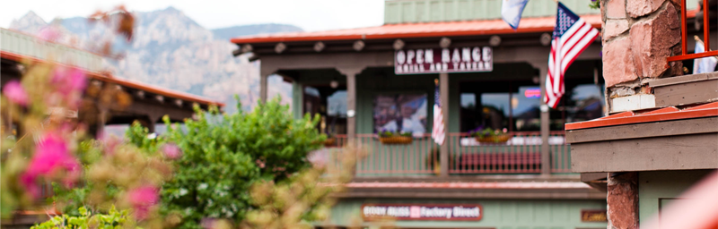
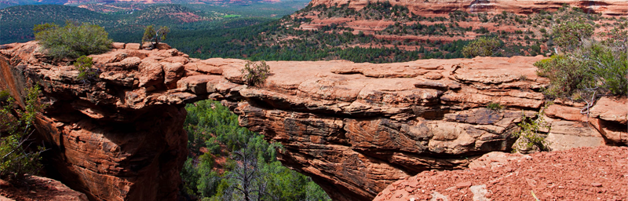

Welcome to the gorgeous
Sedona
"Because the Grand Canyon sucks!"
Седона - небольшой городок в Аризоне заслуживающий большего!
Рассмотрим 5 причин, по которым Седона круче, чем Гранд Каньон
Настоящий городок
-№1-
Седона - не аттракцион для туристов, там течёт своя жизнь
Жильё
Рекомендуем пожить в настоящем
мотеле, всё как в кино!
Еда
Всегда заказывайте фирменный бургер,
Вы не разочаруетесь!
Сувениры
Не только китайского, но и местного
производства!
Там есть мость дьявола
-№2-
Да, по нему можно пройти!Если конечно Вы осмелитесь
Небольшая
площадь
-№3-
Все достопримечательности
находятся очень близко
Красивая
дорога
№4
Ехать в Седону из Лас-Вегаса совсем
не скучно!
Мало
туристов
-№5-
Большинство едет в Гранд Каньон
и толпится там
Заинтересовались
Укажите предполагаемые даты поездки,
и мы покажем Вам лучшие предложения гостиниц в Седоне
Дата заезда:24 апреля 2017
Дата выезда: 4 июля 2017
Взрослые:2
Дети0